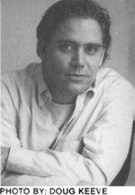
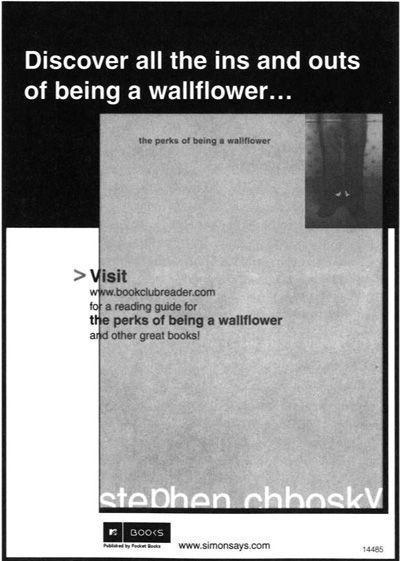
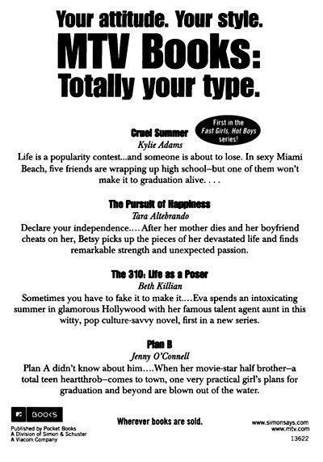

stephen chbosky grew up in Pittsburgh, Pennsylvania, and graduated from the University of Southern California’s Filmic Writing Program. His first film, The Four Corners of Nowhere, premiered at the Sundance Film Festival and went on to win Best Narrative Feature honors at the Chicago Underground Film Festival. He wrote the screenplay for the critically acclaimed film adaptation of Rent, and helped edit John Leguizamo’s one-man Broadway show, sexaholix, to which he also contributed material. He also edited Pieces, a collection of short stories for Pocket Books. He is currently working on a pilot for CBS, entitled Jericho.
the perks of being a wallflower is his first novel.

